Simplified EX-MA arm · lever control box · pedestal · sandbox
BoomStickBucketSlew
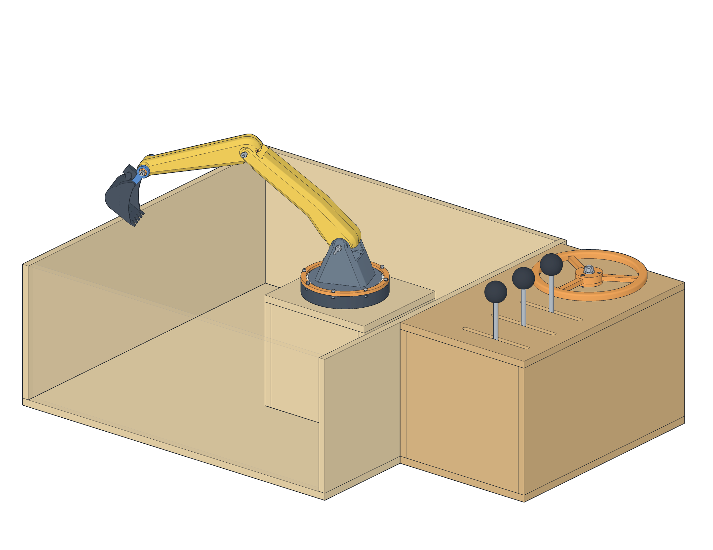
Edition 2026-10-10 · for the project files in 2026-09-24-EX-MA-simplified/ Includes the 2026-09-29 base and bucket-ear rebuilds · all illustrations rendered from the project CAD
26 printed part types · 29 prints 21 plywood panels · 4 rope circuits · no electronics
ContentsEX-MA assembly manual
Contents
Contents
Introduction3
About this manual3
Safety and good practice4
System overview5
What you are building5
How it works6
Controls and specifications7
Build at a glance8
Tools and supplies9
Parts identification10
Hardware at actual size10
Printed parts11
Wood and stock13
Assembly14
Stage 1 — Print and check the parts14
Stage 2 — Cut, drill and label15
Stage 3 — Sandbox16
Stage 4 — Pedestal17
Stage 5 — Slewing ring and turret19
Stage 6 — Control box21
Stage 7 — Conduit, PTFE tubes and box mounting24
Stage 8 — Arm26
Stage 9 — Rig the arm ropes30
Stage 10 — Rig the slew ropes32
Stage 11 — Top, handles, knobs and wheel34
Stage 12 — Final test and configuration35
Reference36
Operation and maintenance36
Troubleshooting37
Appendices38
A — Bill of materials38
B — Drilling drawings39
C — Rope, tube and plate reference41
D — Open items and verification42
E — Compact control box option43
F — Files and revision44
Page numbers count the cover as page 1. Figures are numbered in order through the manual.
This manual takes you from a table of printed parts, plywood and hardware to a working, rigged excavator.
Work through the stages in order: each one assumes the stages before it are complete and checked.
How the pages work
Stage header — the stage number and what it achieves.
You need — every part and fastener for that stage, with its ID (P05 printed, W01 wood,
H03 hardware, S04 stock) and quantity. Lay them out first.
Numbered steps — do them in order; each step is one action.
Figures — numbered balloons 1 match the step text or the list beside the figure.
Orange arrows show where a part moves to.
Check boxes — stop and verify before going on.
Directions used everywhere
The project uses one fixed frame. Picture yourself standing at the control box, facing the sandbox:
+u points away from you, toward the sandbox (“forward”).
+v points to your left; −v to your right.
z points up.
Part names use the same words: the left boom half is the +v half; the sandbox wall “−u” is the wall the box bolts to.
Symbols
WarningRisk of injury. Read before doing the step.
CautionRisk of damaging a part or having to take things apart again.
Common mistakeSomething that is easy to get wrong at this point.
CheckA verification point. Do not continue until it passes.
TipPractical advice. Helpful, but not taken from the CAD model.
Open itemA question this manual found in the design files that you must decide on.
Verified, derived or assumed?
Every number and connection in this manual comes from the project files. Where a statement needs care, it carries a tag:
Tag
Meaning
Verified
Read directly from the CAD model, the build scripts or their validation reports.
Derived
Worked out from the model geometry for this manual (for example an assembly order that the geometry forces).
The reasoning is given next to it.
Assumption
Not in the project files: general practice or a choice you can change. Treat it as a suggestion.
Open item
A conflict or gap found in the design files. Appendix D lists all of them with options.
Colours in the illustrations code the part type, not the filament colour: printed
PLA+ part arm shell (PETG) bucket ears
original EX-MA dark parts plywood
metal hardware. Ropes: boom
stick bucket
slew. Parts already installed in earlier steps are drawn in light grey.
The EX-MA is a hand-powered model: there are no motors, springs or electrics. The hazards are the tools you build it with,
cut wire rope, small parts and pinch points between moving printed parts.
Cut wire rope is sharp. Each cut end of 7×19 rope splays into fine, stiff wires that puncture skin. Wrap tape round the rope before cutting and cut through the tape; wear gloves when handling free ends; wear eye protection when cutting.
Small parts. The 6 mm BBs, M3 nuts and crimp sleeves are choking hazards. The M3 kit is labelled “not suitable for children under 3 years due to small parts”. Keep the build area and the finished model away from small children.
Pinch points. The slewing ring, the lever hubs and every joint drum can trap fingers while ropes are tensioned. Keep fingers out of the box and the pedestal while someone moves a lever or the wheel.
Power tools and blades. Clamp plywood before drilling; cut PTFE tube with a tube cutter or a new razor blade on a cutting board, never toward your hand.
Adhesives. CA glue bonds skin in seconds. Use it with ventilation and keep acetone-free remover nearby. Follow the maker’s instructions and cure times for wood glue, CA, epoxy and silicone.
Heat. Printed PLA+ softens well below the temperature of a car interior in summer. Do not leave the model in direct sun or in a hot vehicle. Assumption
Do not force a joint. Every lever has a hard stop at the end of its slot in the box top. If a lever or the wheel resists before reaching a stop, find the cause (page “Troubleshooting”) instead of pushing harder; a rope can pull out of its crimp or a printed drum can crack.
Sand. Sand in the slewing ring, the lever slots or the conduit wears the parts fast. Keep the sand dry and below the pedestal top (the model’s sand level is 10 mm below it Verified).
Workspace
A flat table about 1.2 × 0.8 m for the box and the sandbox; good light (rope holes are Ø2.4 mm).
Small trays or bags for hardware: one per stage (the “You need” lists match the stages).
Masking tape and a fine marker for labelling ropes and tubes as you cut them.
Before you start
☐
Read the whole manual once, including Appendix D (open items). Decide items 1–5 before the stage they affect.
☐
Decide the box size: the modelled box (this manual) or the compact box (Appendix E). It changes the panels, three rods and three prints.
☐
Check your 5/16in rod: threaded or smooth (Open item 4).
☐
Check the hardware against Appendix A and the actual-size drawings on page 10. The M3 kit holds every screw size used.
☐
Have at least 9 m of rope, a 5 m roll of PTFE tube, 57 BBs plus spares, and the crimp sleeves.
☐
Print plates in the Stage 1 order and do each fit test as the plate comes off.
Three levers and a wheel on a wooden control box drive the EX-MA arm through wire ropes. Each control moves exactly one
motion: boom, stick, bucket or
slew. The ropes run from the box through a 2in conduit under the sandbox wall into the pedestal, up the
turret’s centre tube and along the arm.
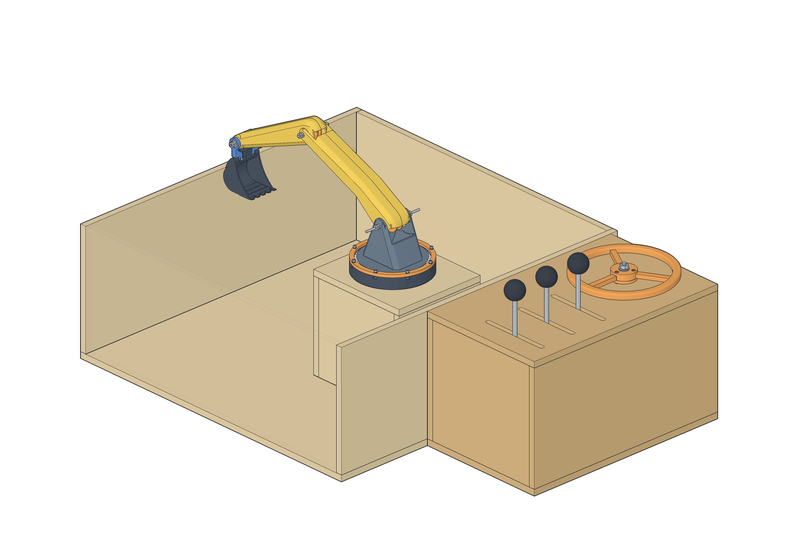
Fig. 1The complete machine as modelled (joints at their modelled pose, the near sandbox wall see-through).
1
Boom lever
2
Stick lever
3
Bucket lever
4
Slew wheel
5
Control box (plywood)
6
Removable box top — the lever slots are the end stops
7
Pedestal (inside the sandbox)
8
Base with the printed slewing ring (57 BBs)
9
Tower (turret)
10
Boom
11
Stick
12
Bucket
13
Sandbox, 610 × 610 mm
Main dimensions Verified
Sandbox (outside)
610 × 610 × 242 mm
Control box (outside, u × v × z)
250 × 405 × 242 mm
Pedestal (outside)
200 × 180 × 190 mm
Base / slewing ring
Ø140 mm
Boom / stick, pin to pin
209 / 175 mm
Knob tops above the floor
339 mm
The control box is the size in the CAD model. A smaller box (214 × 362 × 156) was specified on 2026-09-28 but not
modelled; see Appendix E before you cut the box panels.
Every circuit is a pull-pull loop: one rope, anchored on two drums. Turning the control drum pulls one strand and lets out
the other by the same amount, so the joint drum — and the joint — turns. Nothing else is connected to that rope, so each control moves only
its own joint.
Fig. 2Rope circuits (the “wiring diagram” of this machine). Each lever drives a Ø60
drum on the common lever axle; the slew wheel drives a Ø110 two-lane spool.
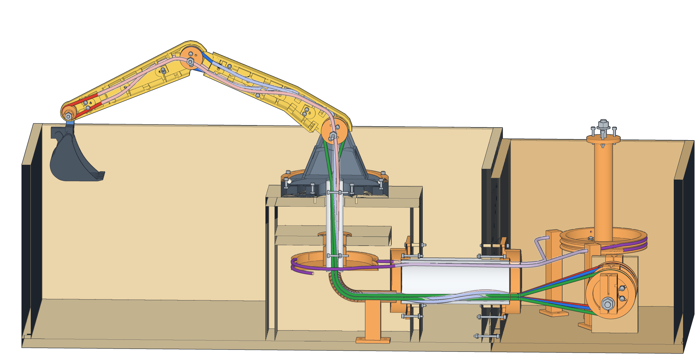
Fig. 3Every rope as modelled, from its control to its joint (cut through the middle; built pose).
Why the stick and bucket ropes run in PTFE tubes
Their ropes cross the boom joint (and the bucket ropes the stick joint). Inside a tube that is anchored at the box fitting and at a stop in the
arm, the rope length does not change when another joint moves. The tubes cross each joint through the pivot axis (the pins are split in two
for this), and the small length change left is taken up as spare tube in the conduit. Verified
Why the slew drum is in the pedestal
The turret turns on a printed ball ring. A 3/4in PEX tube clamped in the turret hub runs down through the base into the pedestal, where the
slew drum is clamped to it; a shelf bushing just above the drum takes the ropes’ side pull. The arm ropes run up the inside of the same tube.
Verified
Fig. 4The operator’s view: three levers in slots, the slew wheel on the right. Orange arrows show the lever travel and the wheel.
Lever and wheel directions
Control
Push forward
Pull back
Joint range
Lever swing
Boom lever
boom down
boom up
-40° … +45°
42.5°
Stick lever
stick out
stick in
-45° … +50°
41.2°
Bucket lever
bucket dump
bucket curl
-55° … +85°
39.7°
Slew wheel
turn left (anticlockwise from above) →
arm swings to your left; 1 : 1
−90° … +90°
180°
“Forward” = toward the sandbox (+u). Directions and ranges Verified: architecture notes and kinematics report. You set the lever
direction when you rig each rope (Stage 9); a reversed lever is fixed by reversing that rope’s wrap on its joint drum.
Key specifications Verified
Rope
1/16in galvanized 7×19
Joint drums (pitch Ø)
boom 30 · stick 26 · bucket 17
Control drums
levers Ø60 · slew spool Ø110
Slew drums
Ø110, two lanes
Slewing ring
57 × 6 mm BBs on Ø118
Joint pins
8-32 threaded rod
Axles / handles
5/16in rod
Printed parts
26 types, 29 prints, ≈1.03 kg
Materials
arm shell PETG, rest PLA+
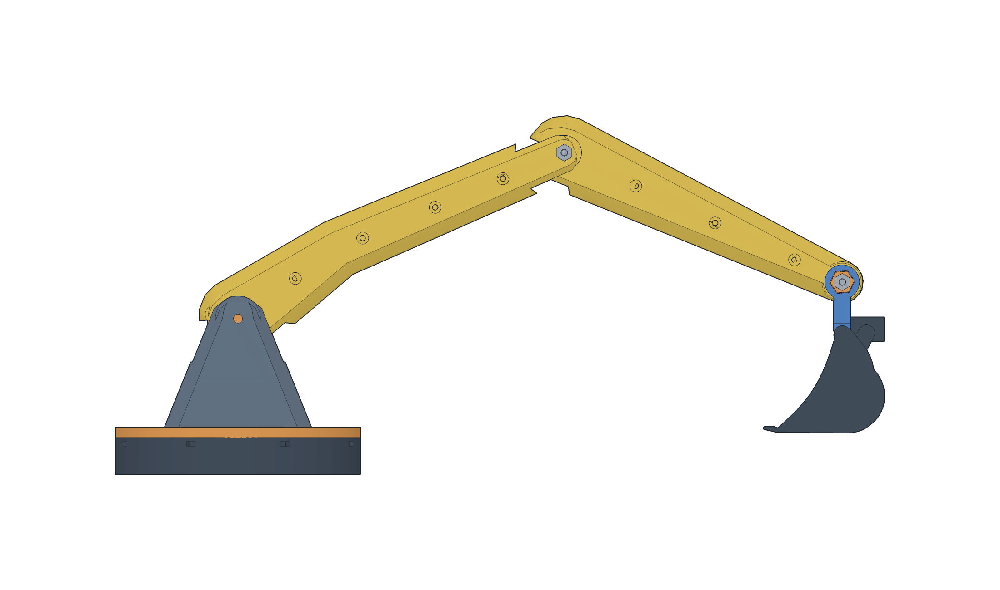
Fig. 5What each lever moves: the working ranges set by the slots (detail in Stage 12).
drums, ropes at the joint end, halves, pins, bucket
p. 26
09
Arm ropes at the levers
zero pose, loops on anchors, tension, direction
p. 30
10
Slew ropes
sleeves, drum pockets, spool anchors
p. 32
11
Top, handles, wheel
top panel, handles, knobs, wheel, drag clamps
p. 34
12
Test & configure
ranges, coupling, tension, friction
p. 35
Changes from the 2026-09-25 checklist Derived
This manual follows the order in 2026-09-25-print-and-assembly-checklist.md with three changes the geometry forces:
The box is bolted on after the turret (Stage 7, not 5). The four PTFE tubes stop in a window on the conduit side of the box fitting;
they can only be seated there while that fitting is still loose. The same bolts hold the fitting, the box front and the sandbox wall together.
The lever axle goes in before the left box side. With the side fitted, its nut is 2 mm from the side panel and the 205 mm rod cannot be
threaded through the blocks.
The joint end of each arm rope is rigged while its arm half is open (Stage 8). The crimp pockets are inside the closed arm.
Open items to decide before you start Open item
Preparing this manual turned up the following conflicts in the design files. Read Appendix D now; items 1–3 change what you do in Stage 8.
#
Item
Affects
1
Stick-drum key screws: two M3 × 12 enter each through-hole from opposite sides and their tips overlap by 1.6 mm.
Stage 8
2
Stick joining lugs 1 and 2 at the stick root are 2.9 mm apart: their holes merge, so only one screw fits there.
Stage 8
3
Joining-lug screws cannot be reached once a boom or stick is closed: no access hole through the outer wall.
Stage 8
4
5/16in nuts on the axles need threaded rod ends; one design note calls the rod “smooth”.
Stages 6, 11
5
The cut list says the pedestal screws to the sandbox floor, but no screws are counted for it.
Stage 4
6
The 3MF plates still hold the old base and bucket ears; print the 2026-09-29 files instead.
Stage 1
7
Rope tension: the checklist says slide the anchors “outward”; the geometry says inward (toward the drum centre).
From the project checklist Verified. Everything else is in the bill of materials (Appendix A).
Hand tools
2.5 mm hex key
M3 socket head cap screws
2 mm hex key
M3 button head screws (rope anchors)
5.5 mm wrench or nut driver
M3 nuts
11/32in wrench (×2)
8-32 jam nuts — one to hold, one to turn
1/2in wrench
5/16in nuts on the axles
Screwdriver (Phillips)
#6 and #8 wood screws
Crimp tool for 1/16in sleeves
single and double crimp sleeves
Wire-rope cutter
1/16in 7×19 rope
PTFE tube cutter or new razor blade
cut square
Pipe cutter or hacksaw; deburring tool
PVC conduit, copper
Power tools and consumables
Drill + 3.5 mm and 2 mm bits
M3 clearance; wood-screw pilots
Drill bits for the panel holes
Ø62 (hole saw), Ø30.4, Ø26.2, Ø24.4, Ø22 counterbore, Ø8.5, Ø4.6, Ø3.0 — sizes from the cut list Verified
Saw for 12 mm plywood
21 panels (Appendix B)
Wood glue
every panel joint
CA or epoxy
bucket ears to the bucket; knobs on the handles
Silicone
conduit seal at the sandbox wall
Cable tie (1)
copper elbow to its support
Masking tape + fine marker
label every rope and tube
Metal file
slot-end burrs, rod ends Assumption
3D printing
The parts were laid out for a Bambu Lab A1 with a 0.6 mm nozzle; slicer projects for Bambu Studio and OrcaSlicer are in 3MF/.
Arm shell in PETG, everything else in PLA+ (SUNLU PLA+ 2.0). Stage 1 lists the settings. Verified
Print this page at 100 % (no “fit to page”) and lay each screw on its drawing to identify it. The scale bar at the bottom must
measure 100 mm. Sizes from the screw standards used in the hardware model Verified.
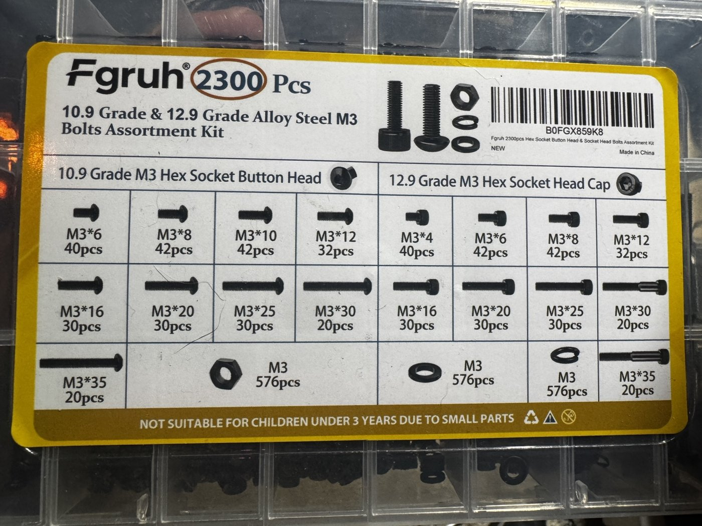
PhotoYour M3 kit (Fgruh, 2300 pc):
socket head caps and button heads in 4–35 mm, nuts, flat and split-lock washers.
PhotoYour Hillman parts: 3 ft of 8-32
threaded rod and 22 hex nuts (used); the #4-40 and #6-32 machine screws are not needed.
M3 × 12 vs M3 × 20. They look alike in the bag. Lay them on the drawing above before each step.
Wood screws are your own stock. Flat-head #6 and #8 are drawn; pan heads will not sit flush in the printed counterbores. Assumption
Use the current files for P09, P10 and P12. The base was rebuilt on 2026-09-29 (no supports needed under the race rim, the four unused outer holes filled) and both bucket ears were rebuilt as clean CAD solids (reinforced joint, no mesh defects). The slicer projects in 3MF/ still contain the older versions: replace them before printing plates 4 and 6 (Stage 1). Do not use the superseded patched-mesh files STL/2026-09-29-bucket-ear-left.stl / -right.stl.
Arm-shell halves are mirror images. The left halves (P01, P03) sit on the +v side, the operator’s left when the arm points away from the box.
25 % (40 % on drums, hubs, clamps and pinned parts)
Supports
tree, only where the plate marks them
PETG filament
Generic PETG @BBL A1 — arm shell only
PLA+ filament
SUNLU PLA+ 2.0 @BBL A1 — everything else
PLA+ speed (project)
flow cap 28 mm³/s at 230 °C; inner walls / infill / supports 200 mm/s; accel 10000
If infill looks thin
lower the filament’s max volumetric speed to 25
Fig. 6Summary of the settings saved in 3MF/2026-09-27-{bambu,orca}-*.3mf
(not a screenshot: your slicer shows them under the printer, process and filament presets).
Open the project for your slicer from 3MF/: 2026-09-27-bambu-… for Bambu Studio 2.8.2.61 or 2026-09-27-orca-… for OrcaSlicer. Each opens with its plates named and the settings in place.
In the PLA+ project, replace the base on plate 4 with STL/2026-09-29-base.stl and both ears on plate 6 with STL/2026-09-29-bucket-ear-{left,right}-cad.stl. Keep their orientation: base flat side down; ears on their outer side.
Every part is already in its print orientation and every wall was checked for the 0.6 mm nozzle — do not rotate or rescale parts.
Print the plates in the order of the table below. After each plate do its fit test (last column) before printing the next.
Material
Plate
Name
Parts
Fit test after printing
PETG
arm 1
Arm shell
P02, P01, P04, P03
bucket drum-axle journals turn freely in both stick-half nose holes
PLA+
other 1
Pedestal
P17, P14, P15, P16
copper elbow pushes into P17’s socket; a PTFE tube slides through its window; the PEX tube turns in P15; P14 slides onto the PEX tube (clamp open)
PLA+
other 2
Control box 1/2
P24, P20, P19, P25, P22 ×3, P26 ×2
5/16in rod slides through each hub and into its handle socket; rod enters each knob; riser sits flat
PLA+
other 3
Control box 2/2
P18, P23, P21
rod through the hub; spool turns on the rod; 4 PTFE tubes seat together in P18’s window and stop on its floor
PLA+
other 4
Turret + slewing ring 1/2
P12 (new file), P11
PEX tube slides into the tower’s centre bore
PLA+
other 5
Turret + slewing ring 2/2
P13
a BB rolls freely in the race between the base rim and the ring
PLA+
other 6
Arm mechanism + bucket
P08, P05, P06, P10 + P09 (new files), P07
each drum sits flat
Check after every plate. Remove all support, then do the fit test. A hub that will not slide on the rod, or a drum that rocks on the table, gets reprinted now — not after it is rigged.
New base (P12). Only the eight nut-slot roofs need support (about 2 cm²; the race rim has its own 45° support built in). The bill of materials still lists 28 cm² for the old base. Verified
Ears swapped. P09 (left) and P10 (right) are mirror images. Mark them L and R as soon as they come off the plate.
Plywood, rods, rope and PTFE tube. Label every piece the moment it is cut.
Wire rope (1/16in 7×19) Verified
Piece
Cut (mm)
Ends
Boom circuit
1384
single crimp at the midpoint (692 mm), loop at each end
Stick circuit
1821
single crimp at the midpoint (910.5 mm), loop at each end
Bucket circuit
2173
single crimp at the midpoint (1086.5 mm), loop at each end
Slew rope A
829
single crimp at one end (pedestal drum), loop at the other (spool)
Slew rope B
900
single crimp at one end (pedestal drum), loop at the other (spool)
Lengths include 60 mm for each double-crimp loop. Total 7.1 m — have at least 9 m.
PTFE tube 4 × 2 mm Verified
Piece
Cut (mm)
Runs
stick_hi
647
box fitting → stop in the boom tip
stick_lo
658
box fitting → stop in the boom tip
bucket_hi
813
box fitting → stop in the stick nose
bucket_lo
822
box fitting → stop in the stick nose
slew sleeve A
339
post A → pedestal fitting
slew sleeve B
407
post B → pedestal fitting
Each includes 10 mm to trim at fitting. Total 3.7 m — one 5 m roll.
Rods and pipe Verified
Stock
Cut
For
5/16in rod
205 mm
lever axle (H14)
5/16in rod
274 mm
slew spool axle (H15)
5/16in rod
3 × 230 mm
lever handles (H16)
8-32 threaded rod
2 × 42 mm
boom split pins (H10)
8-32 threaded rod
2 × 22 mm
stick split pins (H11)
8-32 threaded rod
1 × 65 mm
bucket pin (H12)
3/4in PEX-B
120 mm
turret tube (S06)
2in sch 40 PVC
141 mm
conduit (S08), socket floor to socket floor
1/2in copper
elbow + 50 mm
pedestal elbow (S07)
Cut all ten rope and PTFE pieces. Wrap tape round the rope at the cut mark and cut through the tape.
Write the piece name on a tape flag at both ends of every rope and tube (e.g. “STICK — box end”).
On the three arm ropes, mark the midpoint with a second colour (692 / 910.5 / 1086.5 mm).
Cut the rods square; chamfer the ends lightly with a file so they slide through printed bores. Run a nut on and off each 8-32 piece to clean the thread.
Cut the PVC and copper square and deburr inside and out — a burr will cut a rope.
Rope ends. Tape every cut end until it is crimped. Loose wires go through skin easily.
Plywood
Cut the 21 panels to the sizes on page “Wood and stock” and drill the holes in Appendix B. Holes per panel: box floor 1 (+ Ø22 × 7
counterbore from below), box front 7, box top 1 hole + 3 slots, bearing blocks 1 each, pedestal top 5, pedestal wall −u 5, shelf 1, sandbox wall −u 7.
Verified
Drill the box front and the sandbox wall −u together. Their seven holes must line up (the same M3 bolts pass through both). Clamp the two panels face to face, box front on top, and drill through both. Assumption
Open item 4 — axle nuts. The axle and spool rod ends carry 5/16in nuts. If your 5/16in rod is smooth (one design note says so), thread about 15 mm at each end of the 205 mm and 274 mm rods with a 5/16-18 die, or substitute 5/16in shaft collars. See Appendix D.
A plywood column inside the sandbox that carries the slewing ring on top and the slew drum inside.
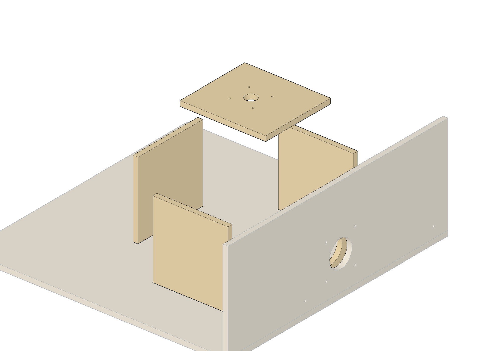
1Wall −u (conduit wall)
2Wall −v
3Wall +v
4Pedestal top
5Wall +u (removable — screw only)
Fig. 9Pedestal walls and top on the sandbox floor. Wall +u is screwed only: it is the service hatch.
You need
W09
Pedestal top (5 holes)
1
W10
Wall −u (conduit wall, 5 holes)
1
W11
Wall +u (removable)
1
W12
Wall −v
1
W13
Wall +v
1
H20
#6 × 1-1/4in wood screw
32
Open item 5 — fixing the pedestal down. The cut list says the pedestal screws to the sandbox floor, but the bill of materials counts no screws for it. Suggested: 4 extra #6 × 1-1/4in up through the sandbox floor into the ±v walls (2 each). Assumption
Glue and screw walls −v and +v between walls −u and +u (4 screws per joint, through the ±u walls). Fit wall +u with screws only, no glue.
Glue and screw the pedestal top onto the four walls (4 screws per wall). The top’s Ø26.2 hole is the PEX clearance; its four Ø3 holes are pilots for the base screws.
Stand the pedestal on the sandbox floor, centred side to side, with wall −u (the drilled one) facing the sandbox’s −u wall.
Set the gap between the inner face of the sandbox −u wall and the outer face of the pedestal’s wall −u to 81 mm, so the two Ø62 conduit holes line up. Verified
Check. Sight through the sandbox wall’s Ø62 hole: you see the pedestal wall’s Ø62 hole centred behind it. The pedestal top is level.
Fig. 10P17 on wall −u, seen from inside the pedestal.
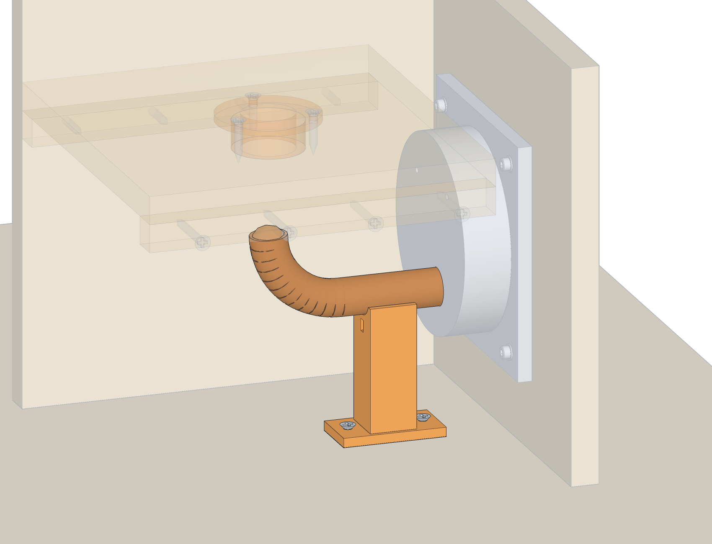
11/2in copper elbow (pushed into the fitting socket)
2Elbow support (P16)
32 × #6 × 3/4in into the sandbox floor
4Cable-tie slot
5Pedestal fitting
Fig. 11Copper elbow and its support.
You need (this page)
P17
Conduit fitting, pedestal end
1
H04
M3 × 25 socket cap
4
H08
M3 flat washer
8
H07
M3 nut
4
S07
1/2in copper elbow + 50 mm pipe
1
P16
Elbow support
1
H19
#6 × 3/4in wood screw
5
Cable tie
1
W14
Shelf
1
W15
Shelf cleats
2
H20
#6 × 1-1/4in wood screw
8
P15
PEX bushing
1
Remove wall +u. Hold P17’s square flange flat against the inside of wall −u: the conduit socket opens toward the wall’s Ø62 hole; the round boss, with the small copper socket in its end face, points into the pedestal. Line up the 4 corner holes.
Bolt it: M3 × 25 + flat washer from inside (head on the fitting flange), flat washer + nut outside the wall. Tighten evenly.
Push the copper elbow’s horizontal leg into the fitting’s copper socket (8 mm deep); the other leg points straight up.
Set the elbow support under the horizontal leg, screw it to the sandbox floor (2 × #6 × 3/4in) and cable-tie the elbow into its saddle.
Screw the two cleats to the inside of walls −v and +v (#6 × 1-1/4in), lay the shelf on them, and screw the PEX bushing into the shelf hole, flange on top (3 × #6 × 3/4in).
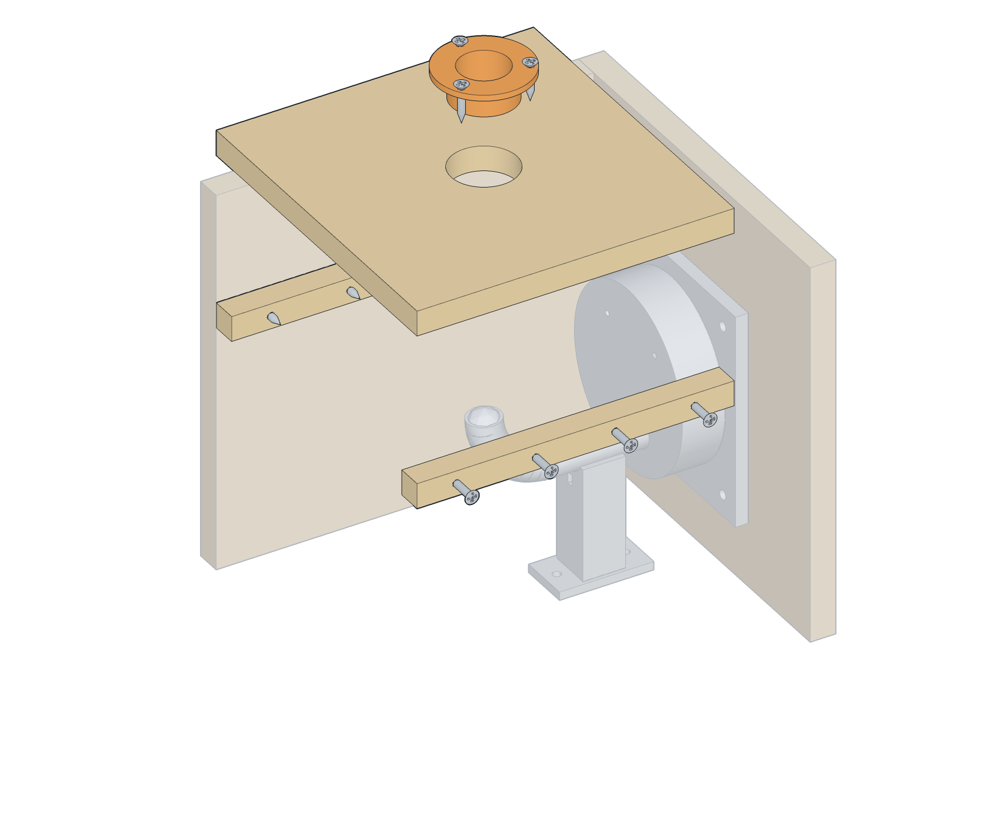
1Shelf (rests on the cleats)
2Shelf cleats (screwed to walls ±v)
3PEX bushing (P15), flange up
43 × #6 × 3/4in
Fig. 12Cleats, shelf and PEX bushing (shelf and bushing lifted out).
Check. The elbow’s top opening is directly under the bushing’s bore (sight down through the bushing). The copper does not move when you pull it. Verified
Fitting turned round. If the big socket faces into the pedestal, the conduit cannot reach it and the copper socket faces the wall.
The base screws to the pedestal; the turret rides on 57 BBs and is held down by the retaining ring.
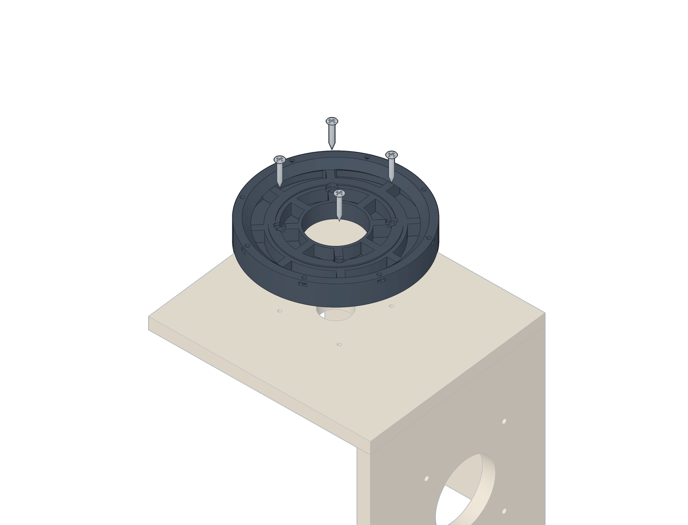
1Base (P12) — current file 2026-09-29-base
24 × #8 × 1in wood screw in the counterbores
3Pedestal top (Ø3 pilots on r 38)
4Nut slots in the rim (8)
Fig. 13Base onto the pedestal top.
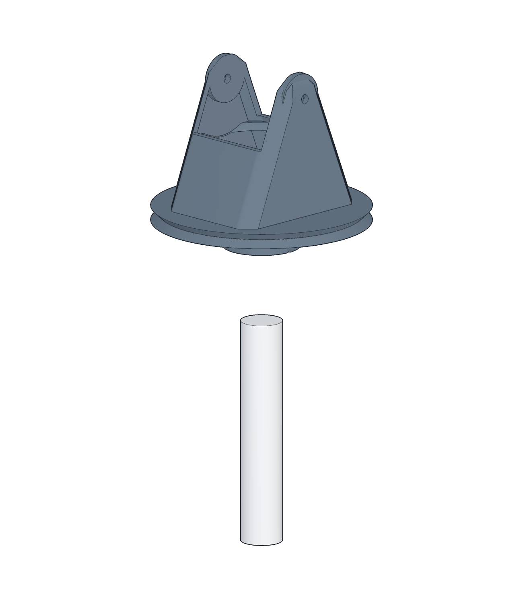
1Tower (P11)
2Turret hub clamp: M3 × 25 + lock washer + nut
33/4in PEX-B tube, 120 mm
Fig. 14PEX tube into the turret hub.
You need
P12
Base (2026-09-29 file)
1
H18
#8 × 1in wood screw
4
P11
Tower
1
S06
3/4in PEX-B tube, 120 mm
1
H04
M3 × 25 (hub clamp)
1
H09
M3 split-lock washer
1
H07
M3 nut
1
Set the base on the pedestal top with its centre bore over the Ø26.2 hole. Turn it until its four counterbored holes (45° positions, r 38 mm) sit over the four Ø3 pilots.
Screw it down with 4 × #8 × 1in in the counterbores. Do not over-tighten into the plywood.
Push the PEX tube up into the tower’s clamp hub from below until its top is 3 mm below the top face of the turret flange (tube top at z 22, flange top at z 25). Verified
Tighten the hub’s pinch clamp: M3 × 25 through the hub, split-lock washer and nut on the far side. The tube must not turn in the hub.
Clamp the tube before the turret goes on. Once the turret sits on the balls, the hub clamp is inside the base and cannot be reached. Verified
Fig. 15Slewing ring, exploded and cut in half to show the race.
You need (this page)
S05
6 mm BBs
57
P13
Retaining ring
1
H02
M3 × 12 socket cap
8
H09
M3 split-lock washer
9
H07
M3 nut
9
P14
Pedestal slew drum
1
H04
M3 × 25 (drum clamp)
1
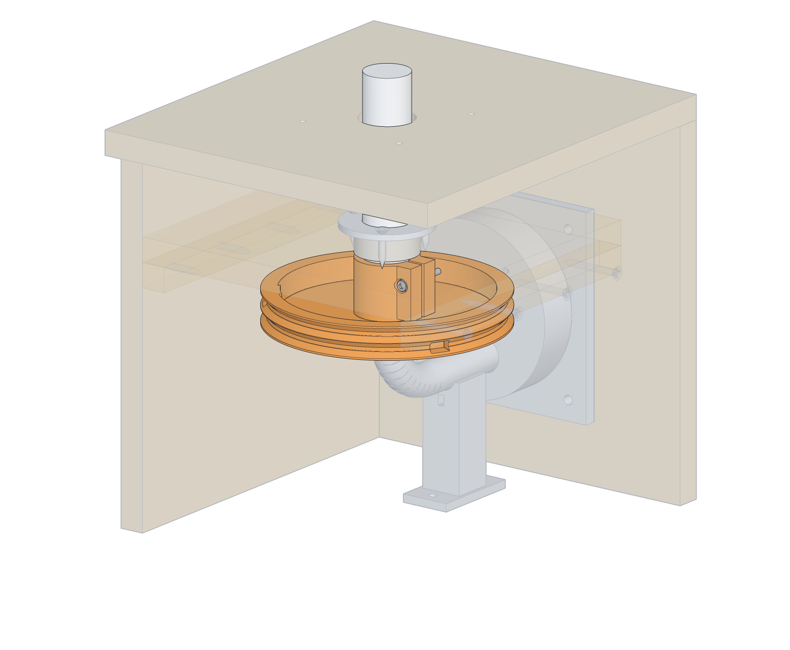
1Slew drum (P14) on the PEX tube
2Pinch clamp: M3 × 25 + lock washer + nut
3PEX tube end 2 mm below the drum
4Copper elbow end inside the PEX bore
Fig. 16Slew drum on the PEX tube inside the pedestal (wall +u removed).
Slide an M3 nut into each of the 8 slots in the outside of the base rim, flat side up, until it lines up with the hole above it.
Lay the 57 BBs in the base’s race (the 45° groove round the rim). They fill the circle with about 0.4 mm between balls.
From inside the pedestal (wall +u off), hold the slew drum under the shelf, hub up. Lower the turret: the PEX tube goes down through the base, the pedestal top, the bushing and into the drum. The turret flange settles on the balls.
Lay the retaining ring on the rim and fit the 8 × M3 × 12, a split-lock washer under each head, into the nuts. Tighten them in a cross pattern, a little at a time.
Slide the drum up or down the tube until the tube’s end is 2 mm below the drum’s underside, and tighten its pinch clamp (M3 × 25, lock washer, nut) lightly. Its rotation is set in Stage 10.
Check — turret. The turret turns by hand with no rocking and no lift. The model allows 0.65 mm lift and 1.1° rock before parts touch. If it rocks, shim under the retaining ring; if it binds, loosen the ring screws evenly a quarter turn. Verified
Count the balls. 57 balls. One missing makes a gap that knocks as the turret turns; one extra jams the ring.
Box carcass, lever axle with its three hubs, the slew spool and the two sleeve posts. The left side and the top go on later.
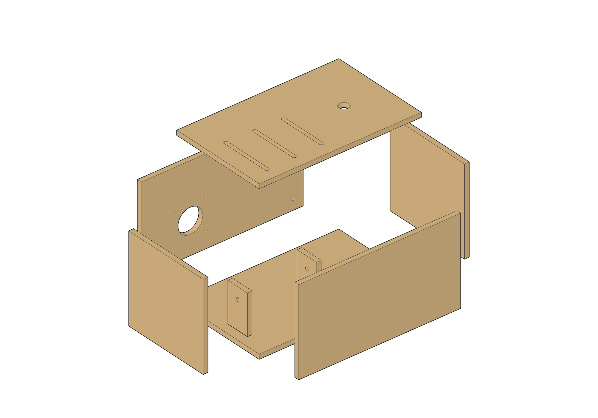
1Floor
2Front (to the sandbox; drilled)
3Rear
4Right side
5Left side (fit after the lever axle)
6Top (removable, fitted last)
7Bearing blocks
Fig. 17Control box panels.
You need
W01
Box floor
1
W02
Box front (7 holes)
1
W03
Box rear
1
W04
Box right side
1
W05
Box left side (later in this stage)
1
H20
#6 × 1-1/4in wood screw
32
Wood glue
Glue and screw the front, rear and right side onto the floor (4 screws per edge, up through the floor).
Join the front and rear to the right side (4 screws per joint, through the front and rear).
The front’s Ø62 hole is low (centre 80 mm above the floor’s top face) and right of centre: 282 mm from the box’s right-hand (−v) side, 123 mm from its left. Verified
Leave the left side and the top off for now.
Box size. These are the modelled box sizes (250 × 405 × 242). If you want the smaller box of Appendix E, its panels, rods and two reprinted hubs all change — decide before cutting.
Fig. 18Lever axle stack, exploded along the axle: blocks, three hubs, washers and nuts.
You need (this page)
W07
Axle bearing block left
1
W08
Axle bearing block right
1
H14
5/16in rod, 205 mm
1
P19
Lever hub, boom
1
P20
Lever hub, stick
1
P21
Lever hub, bucket
1
H17
5/16in nut + SAE washer
2
H19
#6 × 3/4in wood screw
4
On the bench, slide onto the rod in this order from the left (+v) end: left block, boom hub, stick hub, bucket hub, right block. The handle sockets all point the same way (up).
Centre the rod (102.5 mm each side of the middle). Fit a washer and a nut outside each block, finger-tight plus a quarter turn: the hubs must still turn freely. They are 0.5 mm apart by design. Verified
Stand the stack on the box floor: axle 93 mm from the floor’s rear (−u) edge, left block’s outer face 22.5 mm in from the floor’s left (+v) edge. Screw each block from below: 2 × #6 × 3/4in. Verified
Now fit the left side (glue + 4 screws per edge).
Hub order. Boom (P19) on the operator’s left, stick (P20) centre, bucket (P21) right. The hubs look alike — check the label on each before sliding it on. Verified
Stage 6 — continued: slew spool, riser and sleeve posts
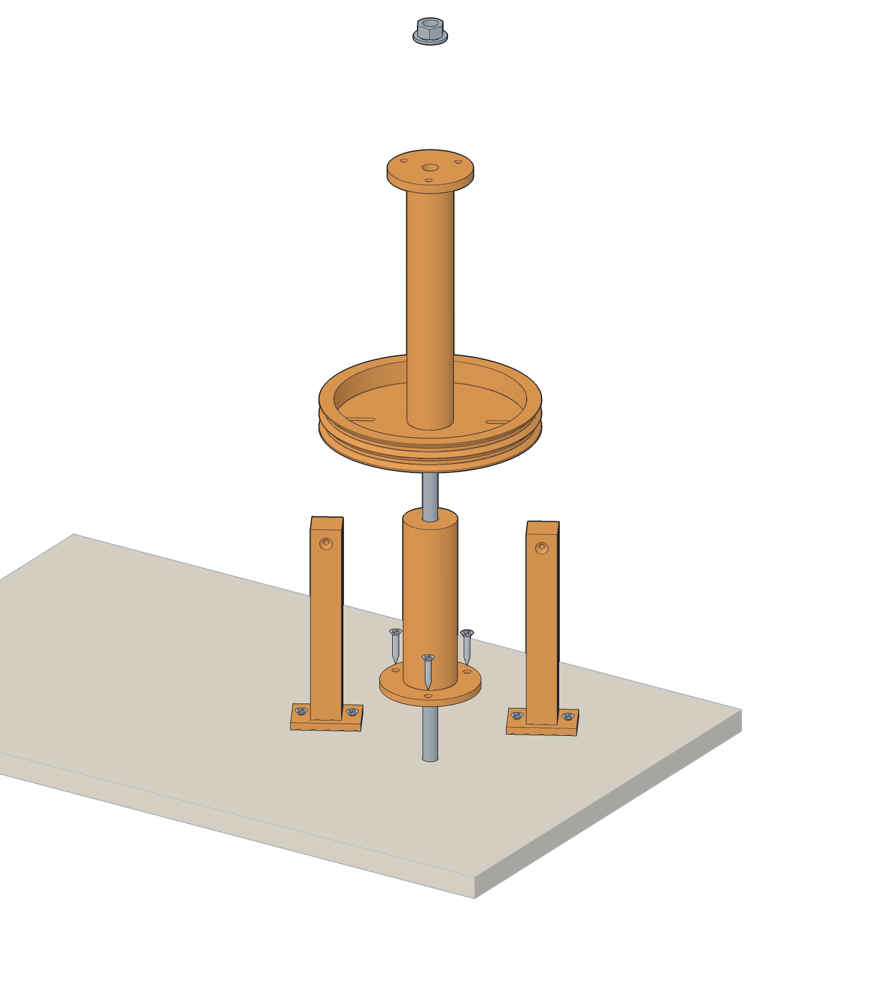
1Slew spool (P23)
2Spool riser (P25) + 3 × #6 × 3/4in
35/16in spool axle, 274 mm
4Washer + jam nut in the Ø22 counterbore under the floor
5Washer + nut on top (fitted with the wheel)
6Sleeve posts (P26 ×2) + 2 × #6 × 3/4in each
Fig. 19Spool axle, riser, spool and posts.
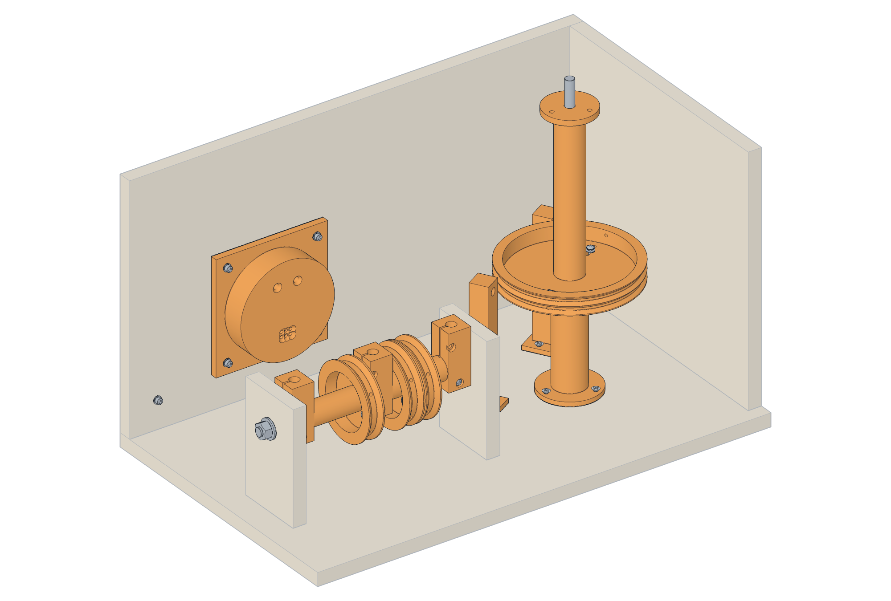
1Lever axle + 3 hubs
2Bearing blocks
3Spool riser + slew spool
4Sleeve posts
5Box conduit fitting (bolted in Stage 7)
Fig. 20Inside the box at the end of Stage 6 (top, rear and left side hidden).
You need (this page)
P25
Spool riser
1
P23
Slew spool
1
H15
5/16in rod, 274 mm
1
H17
5/16in nut + SAE washer
1
P26
Slew sleeve post
2
H19
#6 × 3/4in wood screw
7
P18
Box conduit fitting (loose for now)
1
Post positions come from the model: post A at u −329, v −120; post B at u −274, v −216 (design frame). Each post’s counterbore lines up with the spool’s drum tangent. Verified
Push the 274 mm rod up through the floor’s Ø8.5 hole from below. Fit a washer and a nut on its bottom end inside the Ø22 × 7 counterbore under the floor (the model uses a thin jam nut there so it stays flush).
Slide the riser down the rod onto the floor and screw it through its flange (3 × #6 × 3/4in).
Slide the spool onto the rod, drum end down, onto the riser. There is no washer between them: the gap is 0.5 mm. Verified
Screw the two sleeve posts to the floor beside the spool, each with 2 × #6 × 3/4in through its base. Post A is the one nearer the levers. Each post’s counterbore faces away from the spool.
Put the box conduit fitting (P18) aside — it goes in at Stage 7, together with the PTFE tubes.
Check. Each hub turns freely on the axle and the spool turns freely on its rod. Nothing in the box rubs the hubs.
The conduit links box and pedestal; the four arm tubes are seated in the box fitting, threaded through to the turret, then the box is bolted on.
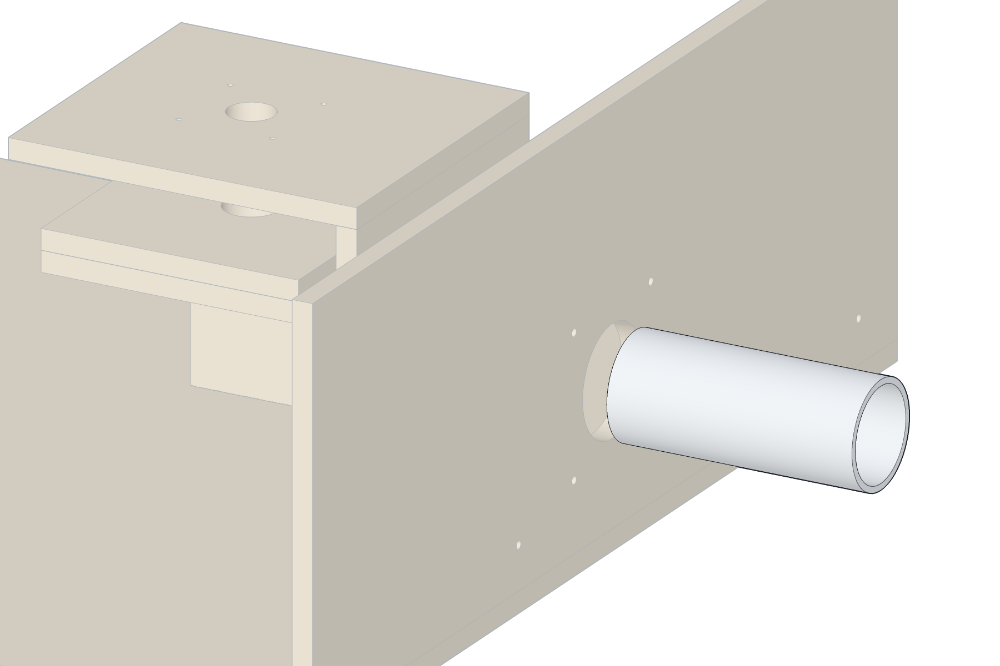
12in sch 40 PVC, 141 mm
2Sandbox wall −u (Ø62 hole)
3Pedestal fitting socket (12 mm deep)
Fig. 21Conduit into the pedestal fitting through the sandbox wall.
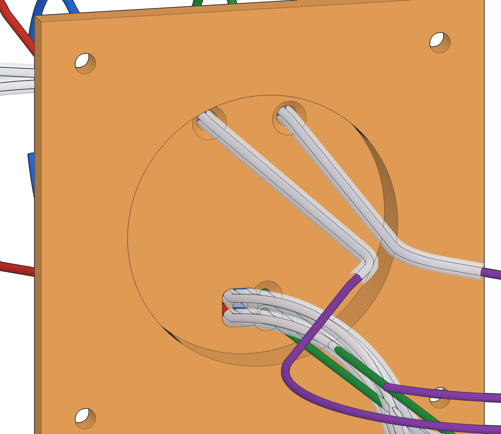
14 PTFE tubes seat together in the rounded window
2Boom rope holes (bare rope)
3Slew sleeve holes (Ø4.6, pass-through)
4Conduit socket
Fig. 22Box fitting P18 from the conduit side, with the tube and rope paths.
You need
S08
2in PVC conduit, 141 mm
1
P18
Box conduit fitting
1
S04
PTFE: stick_hi, stick_lo, bucket_hi, bucket_lo
4
Why this order. The tubes stop in P18 on the conduit side, and P18 is clamped between the box front and the sandbox wall by the same bolts. Once those bolts are in, the window cannot be reached. Derived
Push the conduit through the sandbox wall’s Ø62 hole from outside, across the gap, through the pedestal wall’s Ø62 hole and into P17’s socket until it bottoms (12 mm deep). About 24 mm stays outside the sandbox wall. Verified
Seat the box end of the four arm tubes in P18’s rounded window — from the conduit side (the side with the big socket). They sit side by side and stop on the window floor.
Feed the four free ends out through the box front’s Ø62 hole from inside the box, into the conduit’s outer end, along the conduit, out through P17’s window, into the copper elbow and up the PEX tube until they come out at the top of the turret.
Slide the box against the sandbox wall: the conduit end enters the box front’s hole and P18’s socket. P18 sits inside the box front with its socket on the conduit.
Stage 7 — continued: bolt the box on, seal the conduit
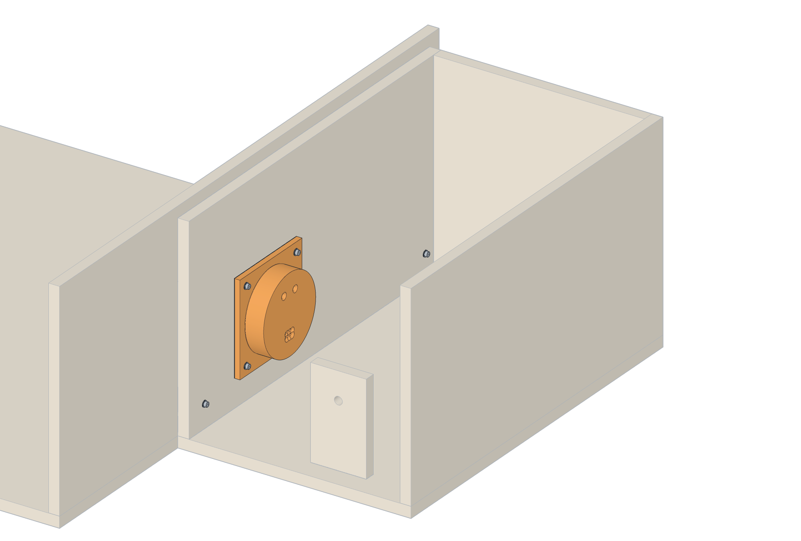
14 × M3 × 35: fitting + box front + sandbox wall
22 × M3 × 30 at the lower corners
3Flat washers both sides; nuts inside the sandbox
4Box conduit fitting (P18)
Fig. 23Box against the sandbox wall: four fitting bolts and two corner bolts (box top, left side and sandbox walls hidden).
You need (this page)
H06
M3 × 35 socket cap
4
H05
M3 × 30 socket cap
2
H08
M3 flat washer
12
H07
M3 nut
6
Silicone
Line up P18’s four corner holes with the box front’s and the sandbox wall’s holes. Fit 4 × M3 × 35 from inside the box: flat washer under the head (on P18’s flange), flat washer and nut on the sandbox side.
Fit the two lower-corner bolts: M3 × 30 through the box front and the sandbox wall, flat washers both sides.
Tighten all six evenly. Seal round the conduit at the outside of the sandbox wall with silicone.
At the turret, pull the four tubes up gently and leave them hanging out of the top for Stage 8. Leave their spare length coiled loosely in the conduit.
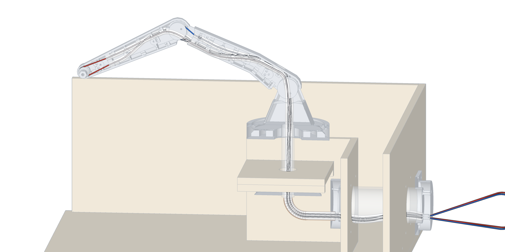
1Box fitting window (tube stop)
2Conduit: spare tube length coils here
3Pedestal fitting window (tubes slide)
4Up the copper elbow and the PEX tube
5Stick tubes stop in the boom tip
6Bucket tubes stop in the stick nose
Fig. 24Where the four arm tubes run when finished.
Check. Each tube slides a few mm when pushed at the turret end, and does not come out of P18’s window when pulled. The box stands flat on the same ground as the sandbox.
Boom, stick and bucket, each with its drum, its rope’s joint end and its PTFE tubes laid in before the halves close.
Read Appendix D items 1–3 first. The CAD shows three fit problems in this stage: the stick-drum key screws collide, two stick lug holes merge, and the joining-lug screws are enclosed once a member is closed. The steps below say where each one matters.
1Boom drum (P05)
2M3 × 12 key screw (4: two per face)
3Crimp pocket (rope midpoint)
Fig. 25Boom drum with its four key screws.
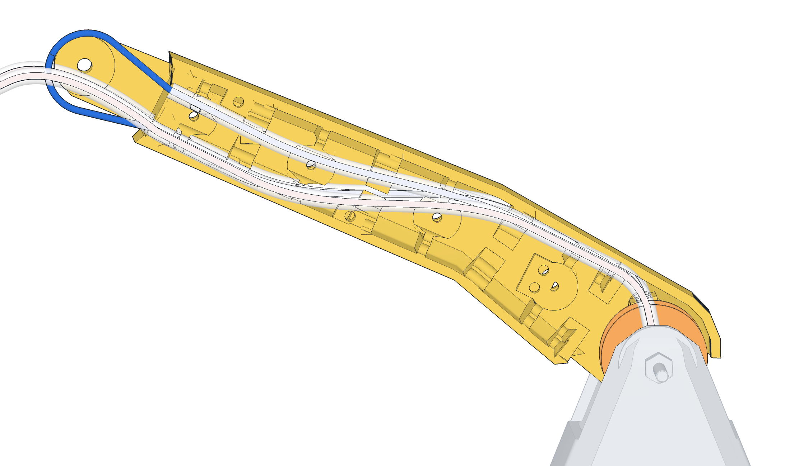
1Boom half, right (P02), split face up
2Boom drum: key-screw heads drop into the wall pockets
3Stick tubes: to their stop in the boom tip
4Bucket tubes: on through the boom tip
5Boom ropes: straight down into the tower
Fig. 26Boom right half with drum, PTFE tubes and boom rope.
You need — boom
P05
Boom drum
1
H02
M3 × 12 socket cap (key screws)
4
S01
Boom rope 1384 mm (midpoint marked)
1
S02
Single crimp sleeve
1
P02
Boom half, right
1
P01
Boom half, left
1
H03
M3 × 20 socket cap (lugs)
4
H07
M3 nut
4
Screw two M3 × 12 into each face of the boom drum (4 screws, into the Ø2.6 pilots) until the underside of each head is 10 mm from the drum face. The heads will sit in pockets in the boom walls. Verified
Crimp the single sleeve onto the boom rope at its midpoint mark. Seat the sleeve in the drum’s crimp pocket and wrap one tail each way round the groove.
Lay the drum in the right boom half (P02) so its two right-hand screw heads drop into the wall pockets at the boom root.
Lay the four PTFE tubes from the turret into P02’s channels: the two stick tubes to their stop at the boom tip; the two bucket tubes on through the boom tip. Trim each stick tube so it seats on its stop.
Stage 8 — continued: close the boom and pin it to the tower
1Boom half, left (P01)
2Boom half, right (P02)
3Joining lugs: M3 × 20 + nut (see Open item 3)
Fig. 27Closing the boom.
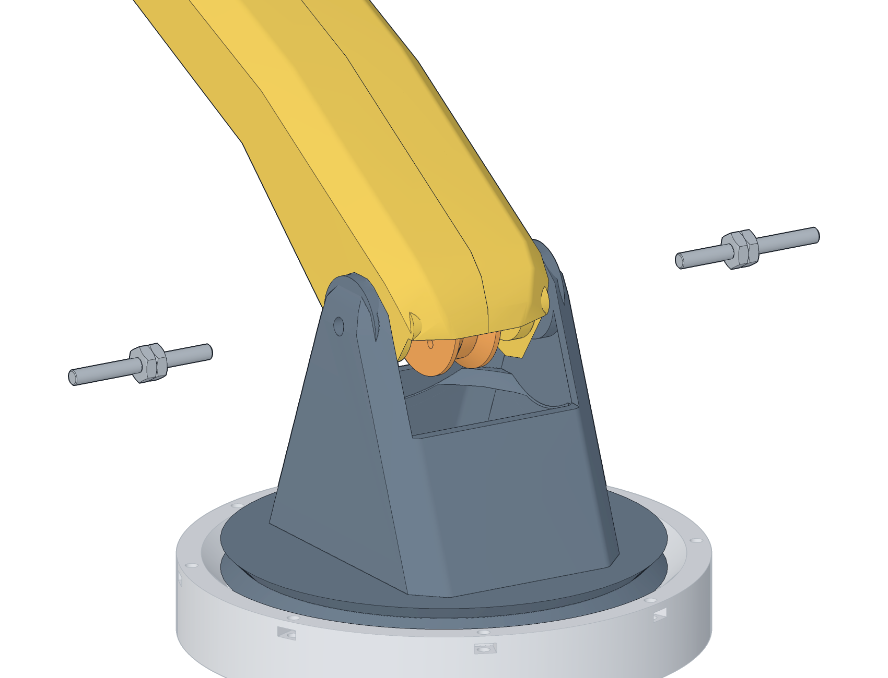
18-32 rod, 42 mm (one per side)
2Jam pair: 2 × 8-32 nut, outside the tower cheek
3Inner end flush with the boom's inner wall
4Tower cheek
Fig. 28Boom split pins: one short rod per side.
Feed both boom rope tails down into the tower and the PEX tube, and push them on down to the box (see the tip).
Close the boom: put the left half (P01) on, the drum’s left screw heads in its pockets.
Joining lugs: 4 × M3 × 20 + nut clamp the halves. Open item 3: in the CAD the lug screws cannot be reached once the halves are closed — decide how you will hold the halves before this step.
Set the boom root between the tower cheeks. Push a 42 mm 8-32 rod through each cheek into the boom wall until its inner end is flush with the boom’s inner wall.
Fit two 8-32 nuts on the outer end of each pin and lock them against each other (jam pair) against the cheek.
You need — boom pins
H10
8-32 rod, 42 mm
2
H13
8-32 nut
4
Threading a bare tail down the elbow. Both fittings have bell-mouth entries on the conduit side. If a boom tail will not find its Ø2.4 hole at the bottom of the elbow, thread it up from the box side instead (through P18, the conduit, P17, the elbow and the PEX), take it over the drum and send the other tail down.
Pin too long inside. A split pin pushed past the boom’s inner wall blocks the PTFE tubes that cross the joint axis. The inner ends must be flush. Verified
3Bucket drum-axle (P07): journals in the nose holes
4Bucket tubes: stop in the stick nose
5Stick tube stops (boom tip)
Fig. 29Stick right half: drum, bucket drum-axle, tubes and ropes.
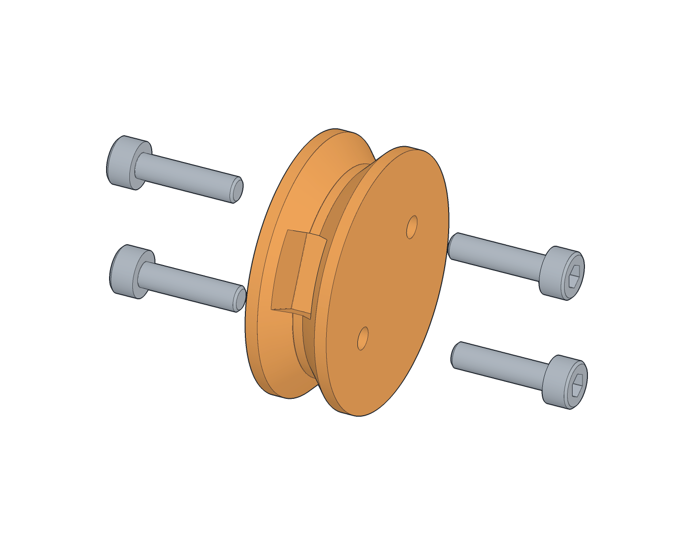
1Stick drum (P06)
2Key screws enter the same through-pilot from both sides
Fig. 30Stick-drum key screws.
You need — stick
P06
Stick drum
1
H02
Key screws — see Open item 1
4
S01
Stick rope 1821 mm
1
S02
Single crimp sleeve
2
S01
Bucket rope 2173 mm
1
P07
Bucket drum-axle
1
P04
Stick half, right
1
P03
Stick half, left
1
H03
M3 × 20 + nut (lugs)
3–4
H11
8-32 rod, 22 mm
2
H13
8-32 nut
4
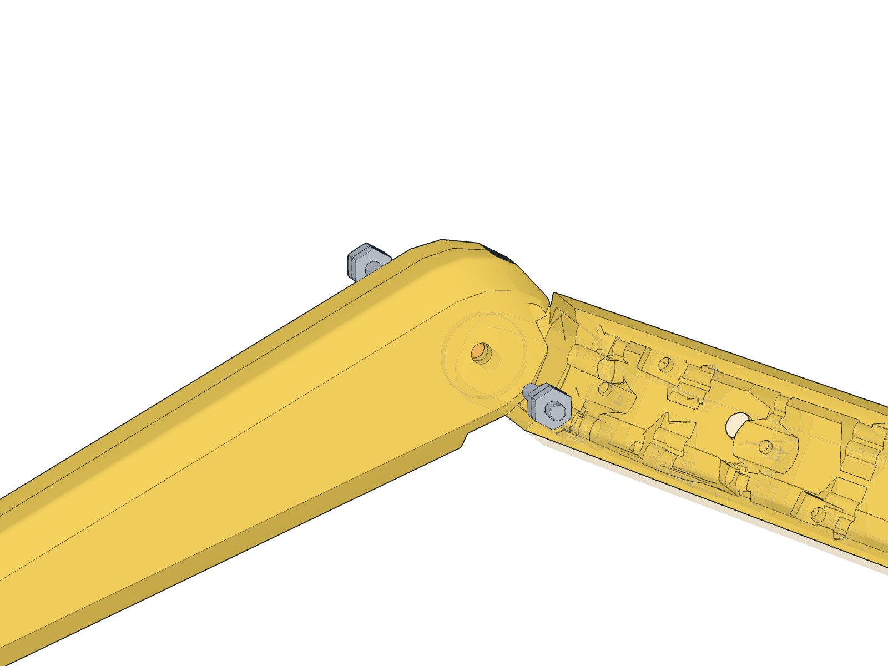
18-32 rod, 22 mm (one per side)
2Jam pair outside the boom tip
3Boom tip
Fig. 31Stick split pins.
Stick drum key screws: each pilot goes right through the 10 mm drum, and the model puts an M3 × 12 into it from each side with the heads 6.2 mm from the faces — the tips then overlap by 1.6 mm. Use M3 × 8 (in your kit) or shorten the M3 × 12 by 2 mm. Open item
Crimp the stick rope’s single sleeve at its midpoint, seat it in the stick drum’s pocket and wrap the tails. Lay the drum in P04 with its screw heads in the pockets.
Push each stick tail into the end of its stick tube at the boom tip and on down the tube to the box.
Bucket drum-axle: put its journals in the nose holes of P04. Crimp the bucket rope’s sleeve at its midpoint, seat it in the drum-axle’s pocket, wrap the tails, and push them into the bucket tubes (laid in P04’s channels to their stop in the nose) and on to the box.
Close with P03. Lugs: the two at the stick root overlap (2.9 mm apart) — only one screw fits there (Open item 2).
Fit the stick to the boom tip with a 22 mm 8-32 rod each side (inner ends flush) and a jam pair outside.
1Ear, left (P09): hex socket on the axle's hex end
2Ear, right (P10)
3Bucket drum-axle (P07) in the stick nose
48-32 rod, 65 mm: the bucket pin
5Jam pair each end
6Bucket (P08): glue faces on the lugs
Fig. 32Bucket, ears and bucket pin, exploded along the pin.
You need — bucket
P08
Bucket
1
P09
Bucket ear, left (2026-09-29 file)
1
P10
Bucket ear, right (2026-09-29 file)
1
H12
8-32 rod, 65 mm (bucket pin)
1
H13
8-32 nut
4
CA or epoxy
Glue last. Glue the ears only with the bucket pin fitted and tightened, so the hex sockets, the pin and the bucket lugs line up.
Ears swapped. The left ear (P09) goes on the +v end of the drum-axle. Swapped ears do not seat on the bucket lugs.
Dry fit: slide each ear’s hex socket onto the drum-axle’s hex end (left ear on the +v end). The ears’ lower blocks rest on the bucket’s lugs and the small pin under each ear goes into the bucket.
Push the 65 mm rod through the left ear, the drum-axle’s bore and the right ear. Centre it.
Fit a jam pair on each end, snug against the ears: the rod clamps the ears to the drum-axle’s shoulders.
When the bucket hangs straight and swings freely, glue each ear’s lower block to its bucket lug (CA or epoxy), as on the original EX-MA. Let it cure fully before rigging.
Swing the bucket, stick and boom by hand through their ranges: nothing may rub.
Check — joint ranges. Boom -40° … +45°, stick -45° … +50°, bucket -55° … +85° from the modelled pose, with no rubbing. The model is contact-free well beyond these (boom −42…+80°, stick −54…+150°, bucket −56…+170°). Verified
Set every joint to the middle of its range and every lever upright, then loop each tail onto its anchor and tension it.
Fig. 33The rigging pose: each joint at the middle of its working range, measured from the modelled pose (+ = raised).
Configuration: zero positions Verified
Joint
Working range
Rig at
Boom
−40° … +45°
+2.5°
Stick
−45° … +50°
+2.5°
Bucket
−55° … +85°
+15°
All levers
slot end to slot end
upright
Slew
−90° … +90°
arm straight out, wheel centred
Crimping at mid-range leaves the same rope wrap on the joint drum at both ends of travel. Prop the arm in this pose with a block
while you work. Verified
You need
S03
Double crimp sleeve
6
H01
M3 × 10 button head (in the hubs)
6
H08
M3 flat washer
12
H09
M3 split-lock washer
6
H07
M3 nut
6
Inside the box each tail comes out of P18’s box face. Take each strand to its own lever drum: boom tails to the boom hub, stick to the stick hub, bucket to the bucket hub. Strands never cross.
Wrap the tail into the groove and pass it through the rim hole beside its anchor slot (upper strand to the upper anchor, lower to the lower).
With the anchor screw at the outer end of its slot (nearest the rope hole), pull the rope just taut and crimp a loop with a double sleeve so that it sits on the screw.
Stack on the screw: flat washer — rope loop — flat washer; the split-lock washer and nut on the other side of the web. Snug only.
Crimping with the joint off-centre. A crimp made with the joint at one end of its range leaves no rope wrap at the other end, and the lever stops short. Re-check the rigging pose before every crimp.
1Rope anchors: M3 × 10 button head in the slot (tension adjuster)
2Washer — rope loop — washer under the head
3Rope holes through the rim into the groove
4Handle socket + pinch clamp (M3 × 20)
5Drag clamp (M3 × 20 + lock washer)
6Ø60 drum groove
Fig. 34Lever hub (boom): anchors, rope holes and clamps.
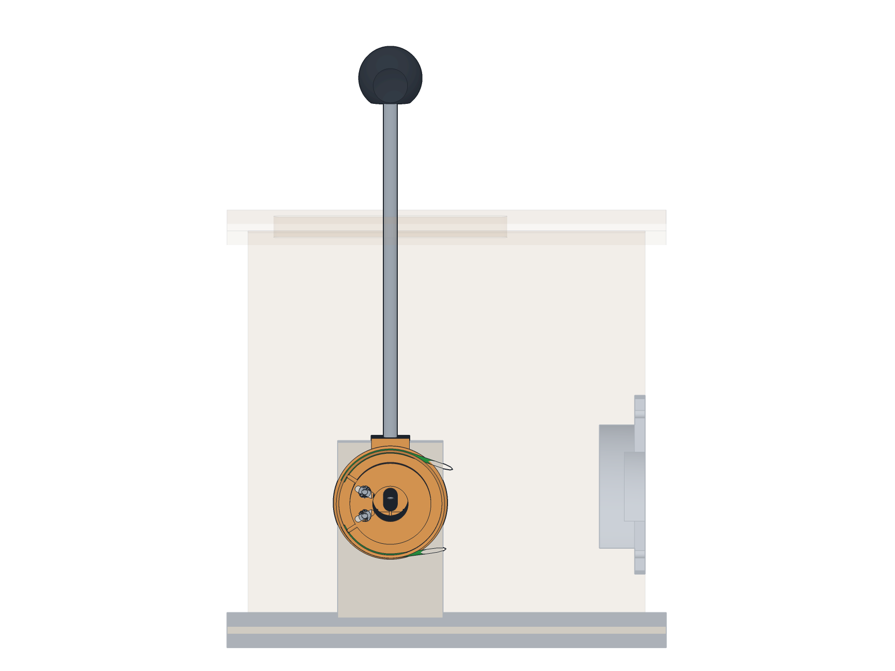
1Push = forward (toward the sandbox)
2Lever axle (5/16in rod)
3Boom rope strands to the box fitting
Fig. 35Boom lever from the side (box cut away): push = forward.
Tension: slide each anchor screw along its slot toward the drum centre (away from the rope hole) until both strands are taut with the joint still at mid-range and the lever upright, then tighten the nut. Each slot gives about 8 mm of take-up.
Repeat for the other strand of the same circuit so the lever stays upright when both are taut.
Direction: push the lever forward (toward the sandbox). It must give boom down, stick out, bucket dump. If one is reversed, undo that rope at the joint drum and wrap it the other way round the drum.
Move each lever slowly end to end and watch its joint: smooth, no slack strand, the rope stays in every groove.
Open item 7 — which way to slide. The checklist says “slide the anchors outward”. In the CAD the rope enters each slot at its outer end, so moving the screw inward is what takes up rope. Trust what you see: the strand tightens as the screw moves away from the rope hole. Verified
Check — no coupling. Hold the bucket lever still and move the boom and stick levers through their full travel: the bucket must not move. The model predicts at most 0.66 mm of rope movement from tube bending (“Bowden coupling”). Verified
Push sleeve A from its post (the one nearer the levers) through P18’s upper slew hole on that side, along the conduit and into P17’s angled counterbore until it stops. Seat its other end in post A’s counterbore and trim the 10 mm extra. Same for sleeve B.
Crimp a single sleeve on one end of rope A. Thread the other end through the pedestal-fitting exit, sleeve A and post A to the spool.
Seat rope A’s crimp in the upper-lane pocket of the pedestal drum and wrap it half a turn in that lane. Rope B: lower lane.
Swapped lanes. Rope A (the shorter, 829 mm) runs in the upper lane on both drums and in sleeve A (339 mm). If ropes cross between the drums, the arm turns the wrong way.
Fig. 37Zero position seen from above, arm pointing straight out (+u):
pocket and anchor angles from the model. Verified
Point the arm straight out (+u, away from the box). Turn the pedestal drum on the PEX tube until its pockets are at the angles in the diagram (lane A 51° to the right of the arm, lane B 62° to the left), then tighten its pinch clamp hard. The drum must not slip on the tube. Verified
Turn the spool so its two anchors are at the angles in the diagram (wheel centred).
Wrap each rope half a turn round its spool lane, pass it through the rim hole by its anchor, and crimp a loop (double sleeve) onto the anchor screw with the screw at the outer end of the slot: washer — loop — washer, lock washer and nut below the web.
Tension both ropes by sliding the anchors toward the spool centre, keeping the arm straight out. Each slot gives about 12 mm.
Turn the wheel left: the arm must swing to your left, 1 : 1, up to 90°. Then right to 90°.
1Anchor A: M3 × 10 button head, washers each side of the loop
2Anchor B
3Upper lane
4Lower lane
Fig. 38Spool anchors and lanes from above.
Check — wrap left at the ends. At ±90° each rope must still have at least 90° of wrap on both drums (the model has 90–270°). If a rope runs out early, the drum or the spool was not centred: re-centre and re-crimp. Verified
Drum clamp. A slipping pedestal drum feels like “the wheel turns but the arm doesn’t”. Tighten the M3 × 25 pinch clamp before tensioning, and re-check it after the first test.
Lower the top onto the box: the spool tube passes through its Ø24.4 hole (the top is the spool’s upper bearing). Screw it to the front, rear and both sides, 4 screws per edge — screws only, no glue, so it lifts off for service.
Push each handle rod down through its slot into its hub socket (25 mm deep). Tighten the handle pinch clamp (M3 × 20, lock washer and nut).
Glue a knob on each handle: the rod goes 14 mm into the knob’s bore.
Bolt the wheel to the spool’s top flange: 3 × M3 × 20, heads in the wheel’s counterbores, lock washer and nut under the flange.
Fit the washer and nut on top of the spool axle. Snug it until the spool has no up-down play but still turns freely. Assumption
Fit the three drag-clamp screws (M3 × 20, lock washer, nut) loosely; they are set in Stage 12.
Check. Each lever stops on the end of its slot at both ends of travel — the slot is the hard stop. The model has the handle touch the slot end exactly at the end of travel, with nothing else touching. Verified
Run every control through its full range, check for coupling, then set the lever friction.
Fig. 40Working ranges set by the lever slots, measured from the modelled pose shown (+ = raised).
Function test Verified
Each lever, slowly, end to end: its joint moves through its whole working range and the handle stops on the slot ends.
Wheel to −90° and +90°: the arm follows 1 : 1 and no rope jumps its groove.
No coupling: move the boom and the stick through their ranges while watching the bucket. It must not move.
At every end stop, look at the ropes: each stays in its groove, and no PTFE tube is pinched at a joint.
Turn the turret by the wheel through ±90°: smooth, no knocking from the ball ring.
Configuration: lever holding friction
Drag clamps: with the arm extended, tighten each lever’s drag-clamp screw a little at a time until the lever holds its position when you let go. The boom needs the most; the bucket almost none.
Re-tension every circuit after the first hour of use (rope stretch and crimp seating), using the slotted anchors.
Lever
Holding torque (model)
Clamp force (µ 0.3)
Boom
0.65 N·m
172 N
Stick
0.23 N·m
60 N
Bucket
0.04 N·m
10 N
From the box validation report Verified. Use them to compare levers: the boom clamp needs several times the stick’s.
Done. When every check on this page passes, the build is complete. Keep the hardware bags: the spares are listed in Appendix A.
Find the symptom, check the likely cause, then go to the stage named in the fix. Causes come from how the circuits are built;
where a cause is general practice it is not tagged separately.
Symptom
Likely cause
Fix
A lever moves the wrong joint
Strands crossed in the box, or ropes swapped at the box fitting
Each circuit’s two strands go to its own hub; the box fitting columns run boom / stick / bucket in the same order as the hubs (Stage 9).
A joint moves the wrong way
Rope wrapped the wrong way round the joint drum
Reverse that rope’s wrap on its joint drum (Stage 9, step 7).
Moving one lever moves another joint
PTFE tube not seated at the box fitting or at its arm stop; tube pinched
Re-seat both tube ends; check the tube is not trapped by a split pin or lug (Stage 8).
Lever stops short of the slot end
Rope crimped with the joint off-centre; rope too tight
Return to the rigging pose and re-crimp (Stage 9).
Lever floppy, joint lags
Rope slack
Slide the anchors toward the drum centre (Stage 9, step 5).
Arm sags when you let go
Drag clamp too loose
Tighten that lever’s drag clamp (Stage 12, step 6).
Lever very stiff
Drag clamp too tight; axle nuts squeezing the hubs; hub rubbing a neighbour
Ease the drag clamp; back the axle nuts off; hubs need their 0.5 mm gaps.
Rope jumps out of a groove
Slack rope at an end stop
Re-tension; check the joint is not driven past its working range.
Wheel turns, arm does not (or slips)
Pedestal slew drum or turret-hub clamp slipping on the PEX tube
Tighten both M3 × 25 pinch clamps (Stages 5 and 10).
Arm turns the opposite way to the wheel
Slew ropes crossed between lanes
Rope A upper lane on both drums, rope B lower (Stage 10).
Slew range less than ±90°
Drum or spool not centred when the ropes were crimped
Re-centre both (Stage 10, steps 4–5) and re-crimp.
Turret rocks or lifts
Retaining ring too high
Shim under the retaining ring (Stage 5 check).
Turret binds or knocks
Missing or extra BB; uneven ring screws; sand in the race
57 balls; loosen the ring screws evenly; clean the race.
Bucket wobbles on its pin
Jam nuts loose; ear glue joint failed
Re-lock the jam pairs; re-glue the ear with the pin fitted.
Handle turns in its hub
Handle pinch clamp loose
Tighten the M3 × 20 handle clamp (Stage 11).
Sand coming out at the box
Conduit seal missing at the sandbox wall
Seal round the conduit with silicone outside the wall (Stage 7).
Rope frays at a fitting
Burr on the copper or the PVC end
Deburr; check the rope runs through the bell-mouth holes.
Every drilled panel, drawn to scale from build-box.pyVerified. Positions in mm from the panel’s lower-left
corner as drawn: a along the horizontal edge, b up the vertical edge. The box floor’s Ø8.5 hole also gets a Ø22 × 7 counterbore
from below.
W01 box floor — seen from above; a from the −u edge, b from the −v edge (operator’s right)
Size
a
b
Purpose
A
Ø8.5
113.0
100.0
slew spool axle (nut + washer in a Ø22 x 7 counterbore from below)
W02 box front — seen from the +u side; a from the −v edge (operator’s right), b from the bottom edge
Size
a
b
Purpose
A
Ø62.0
282.0
80.0
2in conduit
B
Ø4.6
322.0
40.0
fitting bolt (M3 × 35 through the sandbox wall)
C
Ø4.6
322.0
120.0
fitting bolt (M3 × 35 through the sandbox wall)
D
Ø4.6
242.0
40.0
fitting bolt (M3 × 35 through the sandbox wall)
E
Ø4.6
242.0
120.0
fitting bolt (M3 × 35 through the sandbox wall)
F
Ø4.6
25.0
25.0
box-to-sandbox bolt (M3 × 30)
G
Ø4.6
380.0
25.0
box-to-sandbox bolt (M3 × 30)
W06 box top (removable) — seen from above; a from the −u edge, b from the −v edge (operator’s right)
Size
a
b
Purpose
A
Ø24.4
113.0
100.0
spool tube bearing
B
slot 133.0 × 9.0
93.0
360.0
boom lever slot = hard stop (42 deg swing)
C
slot 128.7 × 9.0
93.0
290.0
stick lever slot = hard stop (41 deg swing)
D
slot 123.9 × 9.0
93.0
220.0
bucket lever slot = hard stop (40 deg swing)
W07 + W08 axle bearing blocks (×2, identical) — seen from the −v side; a from the −u edge, b from the bottom edge
Found while preparing this manual by checking the project’s own CAD and hardware model. None of them is fixed in the project files;
each needs your decision. Open item
#
What the files show
Options
1
Stick-drum key screws collide The stick drum is 10 mm thick and each key pilot runs right through it. The hardware model puts one M3 × 12 into each pilot from each side with its head in a 3.5 mm wall pocket, which places the two tips at v −0.8 and +0.8 mm: they overlap by 1.6 mm (10.5 mm³ in the interference check). The boom drum (14 mm) does not have this problem: its screws stop 5 mm short of the centre.
Use M3 × 8 socket caps on the stick drum (in your kit; 1.8 mm in the drum), or grind 2 mm off each M3 × 12. Both keep the heads in their pockets.
2
Stick root lugs overlap Joining lugs 1 and 2 of the stick are 2.9 mm apart, so their Ø3.4 holes merge into one figure-of-eight hole and their screws and nuts overlap (interference check).
Fit one M3 × 20 in that lug; the stick then has 3 lug screws (1 spare).
3
Joining-lug screws are enclosed On both members every lug screw head sits inside the closed shell, and the outer walls have no access hole on the screw axis (ray test on the CAD). As modelled, the lug screws cannot be fitted or tightened once a boom or stick is closed.
Decide before Stage 8. Options: (a) drill a small access hole through the outer wall on each lug axis and fit the nut captive with a drop of CA — changes the exterior; (b) close the halves without lug screws and hold them with tape or a few dots of CA along the seam — loses easy opening for service; (c) add access in the CAD and reprint the halves.
4
5/16in axle ends The bill of materials puts 5/16in nuts on both ends of the lever axle and the spool axle. One design note calls the rod “smooth”; the validation report checks the axle both plain and threaded.
If your rod is threaded rod, nothing changes. If it is smooth, thread the ends with a 5/16-18 die or use 5/16in shaft collars.
5
Pedestal not fixed to the floor The cut list says “the pedestal and the elbow support screw to” the sandbox floor, but no screws for the pedestal are counted in the bill of materials or placed in the hardware model.
4 extra #6 × 1-1/4in up through the sandbox floor into the ±v walls (Stage 4).
6
Slicer plates hold the old base and ears Plates 4 and 6 of the PLA+ project were made before the 2026-09-29 rebuilds.
Replace them with STL/2026-09-29-base.stl and STL/2026-09-29-bucket-ear-{left,right}-cad.stl (Stage 1).
7
Tension direction The checklist says to slide the rope anchors “outward”. In the CAD the rope enters each anchor slot at its outer end, so the strand tightens as the screw moves inward.
Slide toward the drum centre (Stages 9 and 10).
What was verified, and how
Illustrations
Rendered from the project STL files, the plywood panels and the hardware solids at their modelled positions.
Base and ears use the 2026-09-29 files.
Hardware interference
Every pair of fasteners checked for overlap (manifold boolean). Found items 1 and 2; the only other overlap is the
copper elbow inside the PEX tube, which the model draws as a solid rod (not a real clash).
Numbers
Dimensions, ranges and lengths are taken from exma_common.py, build-box.py,
build-parts.py, the bill of materials, the checklist and the validation reports.
Not verified
Physical fit of real prints, glue strength, rope friction, how hard a person can push. Tips and items tagged
Assumption are general practice.
On 2026-09-28 a smaller box was specified (2026-09-28-compact-control-box-spec.md) without changing the arm,
the slew or the reach. It is a specification only — no CAD model was made, so this manual’s figures show the full-size box. Verified
Modelled box (this manual)
Compact box (spec)
Outside u × v × z
250 × 405 × 242
214 × 362 × 156
Lever handle length / rod
225 / 230 mm
140 / 145 mm
Handle spacing
70 mm
60 mm
Lever axle rod
205 mm
185 mm
Spool axle rod
274 mm
188 mm
Slew spool tube
145 mm
59 mm (reprint)
Lever hubs
as printed
boom + bucket reprinted (sleeve −10 mm)
Lid slots (boom / stick / bucket)
133 / 129 / 124
66.1 / 64.1 / 61.8
Slew sleeves A / B
339 / 407
330 / 397 (cut)
Knob stroke (boom)
177 mm
114 mm
Boom holding force at the knob
2.7 N
4.2 N
If you choose the compact box cut its panels from the spec (floor and lid 214 × 362, front and rear 362 × 132, sides 190 × 132), reprint the slew spool and the boom and bucket hubs, and drill two new box-to-sandbox holes. The Stage 6 and Stage 11 steps are the same; only the dimensions change.
Unchanged Arm, turret, pedestal, conduit, fittings, drums, all arm ropes and the four arm PTFE tubes. The lever axle height and position stay the same, so the rope angles do not change. Verified